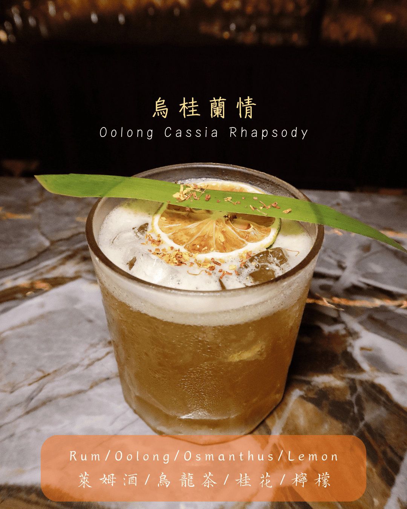
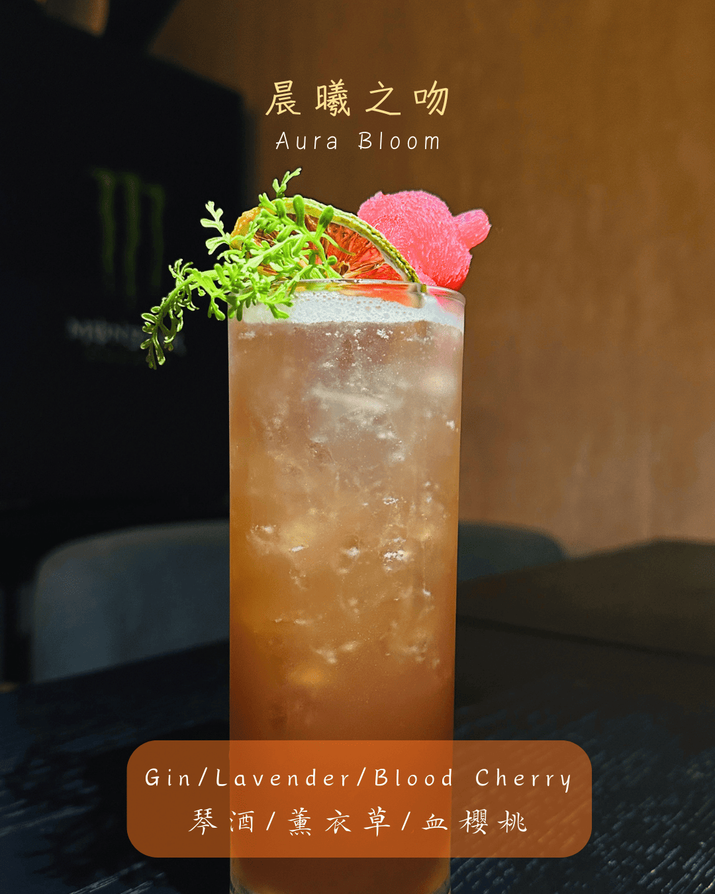
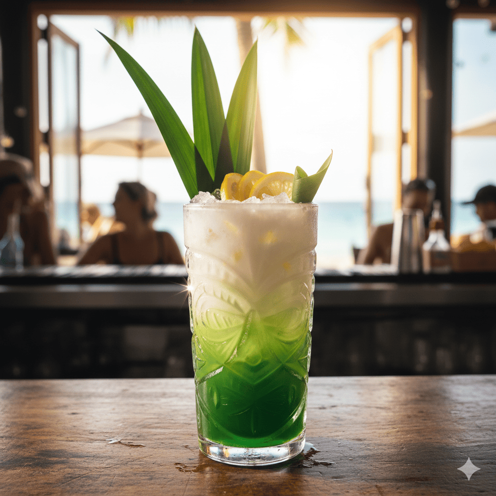
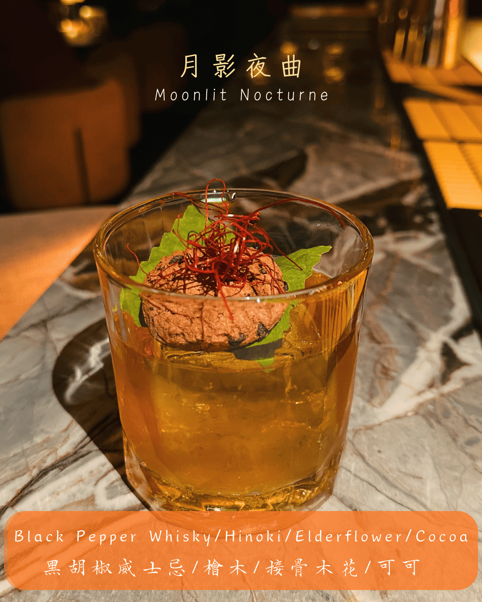

✦ 靈魂微醺視覺饗宴 ✦
在翻開微醺詩篇之前，先讓光影與旋律帶您預覽 CIE CIE TAIPEI 的 12 款原創藝術。建議開啟聲音，沉浸於專屬的慵懶氛圍。
🍵 第一章：舌尖上的東方禪意
如果您偏愛內斂、優雅，帶有茶葉回甘的底蘊，這三款以茶入酒的特調將帶您進入截然不同的平靜維度。從烏龍的深沉到茉莉的清香，每一口都是東方慢板樂章。
尋覓台北大安區最迷人的特色茶酒？這杯精緻的創意調酒以溫潤蘭姆酒為基底，巧妙揉合台灣深沉的烏龍茶韻與優雅桂花香。舌尖上綻放著檸檬微酸的清爽，層次豐富，宛如一抹午後微風拂過寧靜茶園，為您的微醺之夜留下最溫柔的回憶。
A signature tea-infused cocktail where smooth rum dances with the deep, roasted notes of Taiwanese Oolong. Delicate osmanthus and a touch of zesty lemon create a refreshing, poetic finish. A gentle breeze through a serene tea garden in every sip.
喜愛花草系調酒的您絕對不能錯過這款琴酒特調。將茉莉與菊花綠茶的淡雅草本芬芳，完美揉合純粹的琴酒骨幹。表面輕輕點綴的玄米香氣，層次清幽且明亮。品飲之間，彷彿一步步走進靜謐的日式庭院，享受極致的禪意與寧靜。
An elegant craft gin cocktail expressing ultimate Zen. The delicate floral notes of jasmine and chrysanthemum green tea blend seamlessly with crisp gin, while a whisper of roasted genmai guides your senses into a tranquil Japanese courtyard.
完美詮釋台灣在地風味的威士忌特調。獨特的地瓜威士忌散發迷人焙烤香氣，與黑糖的厚實溫潤完美交織。覆蓋上層的濃郁起司奶蓋，帶來如甜點般絲滑的驚喜層次。這杯充滿大地生命力的創意調酒，是深夜療癒靈魂的完美大人味。
A uniquely Taiwanese craft cocktail featuring roasted sweet potato whisky and rich brown sugar. Crowned with a velvety savory cheese milk foam, this earthy and comforting drink is a decadent, dessert-like indulgence for the mature palate.

🌸 第二章：漫步浪漫花園
適合閨蜜聚會或浪漫約會。將鮮花與莓果的氣息完美封存，繽紛的色澤與甜潤的層次，每一口都是視覺與味覺的雙重享受。大安區慶生與紀念日的絕佳點綴。
台北約會與慶生必點的夢幻花果調酒！以純淨琴酒為基底，浪漫揉合薰衣草的優雅芳香與血櫻桃的甜潤果香。隨著輕盈氣泡在杯中躍動，散發出猶如晨光初現、花園悄悄綻放時的迷人氣息。這杯極致唯美的特調，為您的微醺之夜帶來浪漫悸動。
A dreamy floral and fruity craft cocktail perfect for a romantic date night. Crisp gin meets the elegant aroma of lavender and the sweet allure of blood cherry. With effervescent bubbles dancing in the glass, it captures the enchanting essence of a blooming garden at dawn.
一杯專屬台北夜晚的浪漫葡萄酒特調。紅酒的醇厚與伏特加的純粹完美交織，並融入接骨木花的清雅與玫瑰的濃郁芬芳。深邃迷人的酒紅色澤，散發著馥郁誘人的花果香氣，每一口都在舌尖上訴說著不言而喻的曖昧，是優雅品飲的絕佳選擇。
A seductive wine cocktail capturing the romance of a Taipei night. The depth of red wine and the purity of vodka are infused with delicate elderflower and lush rose. Its mesmerizing crimson hue and rich floral aroma whisper an unspoken, passionate allure.
尋找一杯視覺與味覺雙重享受的精品調酒？這款特調將純淨的琴酒，佐以紫羅蘭的迷幻花香與覆盆莓的鮮明酸甜。莓果的奔放與優雅花語在舌尖上浪漫共舞，夢幻般的酸甜層次交織出令人心動的微醺滋味，絕對是女孩們聚會的摯愛。
A boutique craft cocktail offering a dual feast for the eyes and palate. Crisp gin is perfectly balanced with the enchanting floral notes of violet and the vibrant tartness of raspberry. A dreamy, sweet-and-sour berry romance that dances gracefully on your tongue.
漫步信義安和街頭，用這杯清爽水果調酒洗去一身疲憊。以伏特加與白酒為骨幹，完美揉合水蜜桃與西洋梨如初戀般的鮮甜果香。輕盈躍動的微氣泡感，帶出夏日午後般的溫柔柔光，口感明亮且平易近人，是一杯極具親和力的微醺佳作。
Wash away the city's hustle with this refreshing fruit fizz. A crisp base of vodka and white wine beautifully marries the innocent sweetness of peach and pear. Light, lively bubbles bring forth a radiant, gentle glow—an approachable and delightfully bright summer breeze in a glass.

🏝️ 第三章：逃離都市喧囂
壓力大時，您需要的是一杯能瞬間將您抽離現實、充滿熱帶果香的清新解藥。閉上眼，讓南洋微風與果酸為您洗去整日的疲憊。
渴望逃離都市喧囂？這杯南洋風調酒帶您一秒飛往熱帶島嶼。蘭姆酒的微醺中，斑蘭葉的草本清香與柔和椰香完美交融，巧妙點綴台灣在地冬瓜露的獨特甘甜。伴隨檸檬微酸，猶如一場沁涼的熱帶午後陣雨，享受極致的愜意度假感。
Escape the city's clamor with this tropical serenade. Premium rum blends harmoniously with the herbal freshness of pandan and creamy coconut. A clever touch of Taiwanese winter melon syrup and zesty lemon creates a refreshing afternoon shower on a tropical island. Pure vacation bliss.
偏愛輕酒感調酒的絕佳選擇！這款精緻特調以伏特加與白酒為基底，麝香葡萄的高雅香氣與百香果的奔放熱帶果香相互輝映。酒體輕盈明亮，酸甜層次豐富，入喉瞬間宛如夏夜裡一陣清脆的風鈴聲，沁人心脾，令人回味無窮。
The perfect choice for lovers of light, refreshing craft cocktails. A sophisticated base of vodka and white wine is elevated by the elegant aroma of Muscat grapes and the vibrant passion fruit. Bright and delicately balanced, it chimes on the palate like a crisp breeze on a midsummer night.
來到大安區尋找極致的微醺體驗？這款創意茶酒巧妙融合了紫蘇梅酒的酸甜與鮮明奔放的柚子果香。伏特加與深邃紅茶交織出醇厚的茶酒骨幹，果酸與茶香的完美平衡，讓層次極度豐富且解膩。每一口都散發著誘人魅力，讓人忍不住一再回味。
Discover the ultimate craft tea cocktail experience. This exquisite creation ingeniously weds the sweet-tart profile of Shiso plum wine with vibrant yuzu citrus. Grounded by vodka and deep black tea, the flawless balance of bright acidity and robust tea leaves an irresistibly refreshing, layered finish.

🪵 第四章：深夜的深邃夜曲
當夜色漸深，熱鬧褪去，這兩款帶有木質調與醇厚苦甜的特調，只獻給懂得品味孤獨與質感的靈魂。適合作為夜晚的最後一杯，在沉靜中回味。
尋找大安區最獨特的威士忌特調？這杯充滿神秘感的木質調酒，以黑胡椒威士忌的辛香在舌尖輕盈跳躍，隨即被台灣檜木的沉穩氣息溫柔包裹。接骨木花與可可的點綴增添了深邃層次。這是一首專為深夜孤獨與質感靈魂譜寫的大人味夜曲。
A mysterious, woodsy craft cocktail crafted for the discerning palate. The spicy kick of black pepper whisky dances on the tongue, gracefully embraced by the grounding warmth of Taiwanese Hinoki. Hints of elderflower and cocoa add profound depth to this mature, moonlit nocturne.
來到信義安和餐酒館，品味這杯將茶與咖啡完美融合的創意調酒。茉莉花琴酒的優雅茶香，優游於濃郁醇厚的咖啡酒中，茶的輕盈巧妙中和了咖啡的微苦。綿密奶泡上點綴著迷迭香與烘烤檸檬片，酒感內斂卻後勁十足，是深夜慢飲的最佳選擇。
Discover the perfect harmony of tea and coffee in this sophisticated craft cocktail. The elegant floral notes of jasmine gin swim gracefully through rich coffee liqueur, balancing its robust bitterness with an airy lightness. Crowned with velvety foam and rosemary, it’s a captivating late-night indulgence.

您的今晚，屬於哪一種風味？
別讓美好的夜晚只停留在想像。走進 CIE CIE TAIPEI，讓我們的調酒師為您呈上專屬的微醺藝術品。
📅 立即預訂您的專屬座位